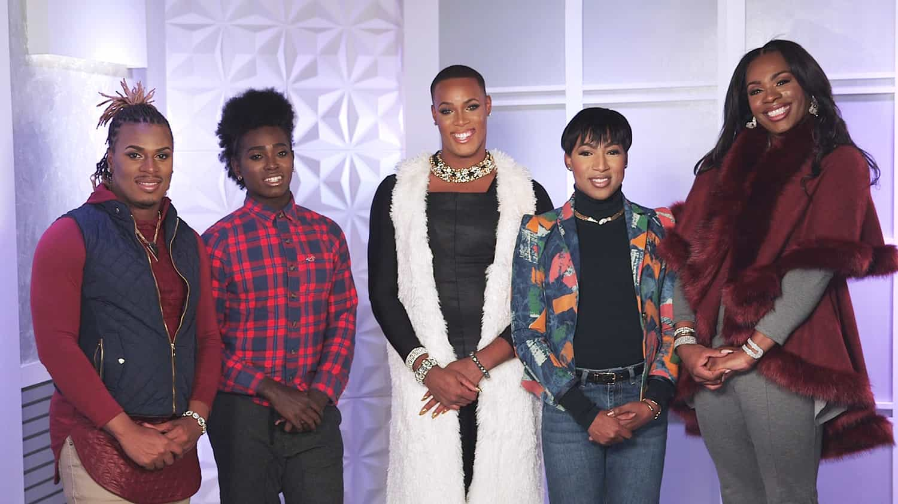
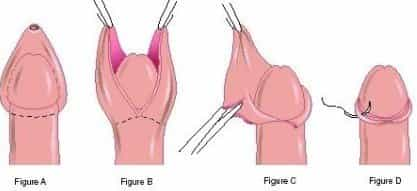

B. Chad Galt is a former federal agent who left the blue pill matrix to escape the increasingly femo-supremacist bureaucracy and live as a perpetual traveler outside of the collapsing West.


The Western man has achieved great wealth, intellectual attainment, technological advancement, medical breakthrough, and the highest status in the world at breakneck speed in the modern era. But as all good things must come to an end, the Western man is drifting quickly towards the edges of the whirlpool due largely to his own actions.
Historians will debate the reasons for this inevitable fall. I put it to you that chief among them was the willful abdication of the Western man’s preeminent status in favor of the Western woman.
Little did these men understand that female nature, at its core, employs the strategy of obtaining “MORE” to the point where men have now become dispossessed of the pinnacle of social power. The Western woman sits atop this pinnacle and is now the most privileged, exalted, coddled, empowered, shielded, and defended demographic group in the world while the Western man is her minion. Some evidence of the problem is as follows.

The explosive popularity of Western men living their lives as “trans women” is indicative of their desire to live under the privileges, protections, and prestige of those in this master race. There is no wonder why Western women are the biggest advocates of “trans women” because imitation remains the sincerest form of flattery.
We need only look toward the pre-civil rights era when racially mixed blacks would often engage in “passing” as whites to avoid the unenviable position as second class citizens. The trans community is exercising the same strategy, albeit far less convincingly.
Lets’s face it. The most fashionable and celebrated men in the Western world are gay or seemingly gay men because their very existence validates Western women’s status as the master race which is to be emulated and respected at all costs.
Western women defend gay and seemingly gay men to the death because an attack on anything gay is an attack on Western women by proxy. This is way Western women attend “Pride” events with glee and promote the LGBT lifestyle as hip and progressive. Each new gay man represents a new loyal follower of women as the master race.

Western women exert the power of their governments to enhance their exalted status and to symbolically subjugate men in a variety of ways. One of the most egregious examples is the difference in treatment between male and female genital mutilation.
The United States government actively funds and supports male circumcision programs under the guise of reducing the spread of HIV in developing countries. The efficacy and clinical underpinnings of this practice are suspect at best but this program is vociferously defended by feminists to thumb their noses at men all while anti-female genital mutilation programs are similarly funded and supported. This baffling discrepancy is how women in governments actively flaunt their power to reinforce their supremacy over men.

One of the most powerful ways the Western women has defeated men is by backing men into a behavioral corner by restricting male options. For example, if a man in the workplace restricts his interactions with women to purely professional matters, he stands to be liable to charges of disparate treatment discrimination at worst. But if this same man willingly interacts socially with women at work, he stands to be accused of sexual harassment when any woman finds it advantageous to do so.
In the area of public transport, if a man refrains from giving up his seat to a woman, a woman can have him arrested for manspreading in some jurisdictions lest he forget himself in her presence. But if the same man gives up his seat to a woman, he can be cited for being creepy if the woman so deems him.
If a man shows common courtesy and holds a door for a woman, he can be chastised as condescending for treating the woman as somehow less capable of getting the door for herself. But if this same man refuses to hold that door open for that woman, he can be deemed a rude miscreant for not showing deferential treatment to his better.
Western men therefore now live in a world of being potentially damned if you choose to do and likewise damned if you don’t. This is the hallmark of female supremacy in a system where women are empowered with arbitrary power to control men in every sphere of life.
So how can men regain supremacy when the decks are so stacked against them. The below are tips men can incorporate into their day to day lives to topple women from their tenuous place of power.
Treat all other women as if they are on their own when they are in a pickle. Pass by the woman with a flat tire. Never intervene on behalf of a woman in your personal life. Treat them as if they are on their own.
Although this practice can be legally challenged, clever employers know that spending a little on legal defense early can prevent years of huge costs later.
Women, unless they are sleeping with you, are to be treated as the enemy which wants to exploit you for whatever money, attention, and services you can provide. See women purely as providers of sex and children only. If you want to have platonic friendships with women, do so outside of Western society where women still respect men as leaders.
It has been said that “Elections are less about voting for someone and more about voting against someone else.”
Women rule the roost in Western institutions, so these actions go a long way towards changing discriminatory attitudes towards men in favor of women.
And increasingly invest and spend your wealth there as an act of defiance. Starving the West of male consumption revenue will hasten the economic demise of female supremacy and leave it vulnerable to overthrow from within or from without.
Hostile outside forces are the means to re-masculinizing the West. Use these enemies of your enemy to do your dirty work for you because when it is all said and done, Western men will rise to the top in any male-dominated society.
Female supremacy will inevitably fall, but “red pilled” men must collectively do all we can to ensure it happens sooner rather than later.
Read Next: Why Western Men Prefer Foreign Women Over Their Own